Custom Avionics
GPS and Radio PCB
A 3D model of the board sits above this title. On a computer you can drag it to turn it.
What the board does
I designed this board end to end for AerospaceNU, Northeastern's rocketry club. It tracks the rocket with GPS and sends its position over a 900 MHz LoRa radio to the ground station I'm working on now.
Built for a compact avionics bay, so size and weight drove every part choice. The smallest part is about the size of a grain of sand.
The schematic
Integral components.
- SAMD21 microcontrollerLots of useful pins and low power draw.
- u-blox SAM-M8Q GPSBuilt-in antenna and a small footprint.
- E22 LoRa radioIts footprint can take a more powerful E22 module later.
- LTC4412 power multiplexerPicks USB or the battery on its own, so the board is easy to bench test.
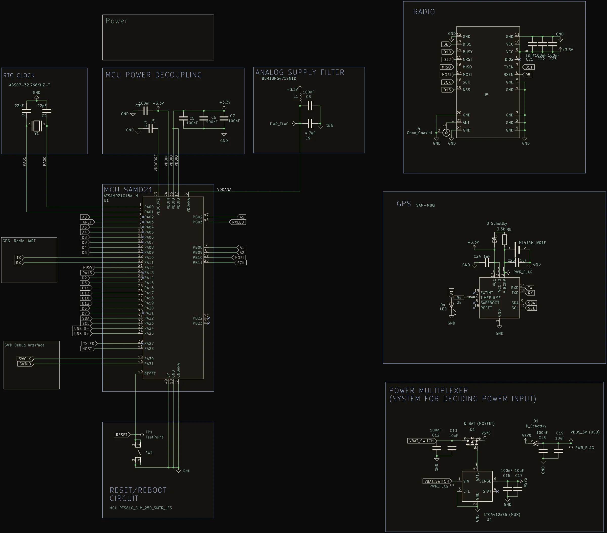
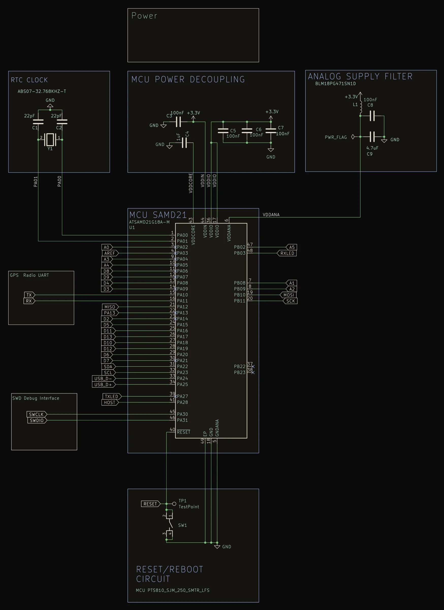
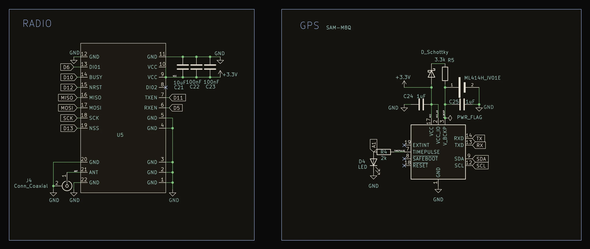
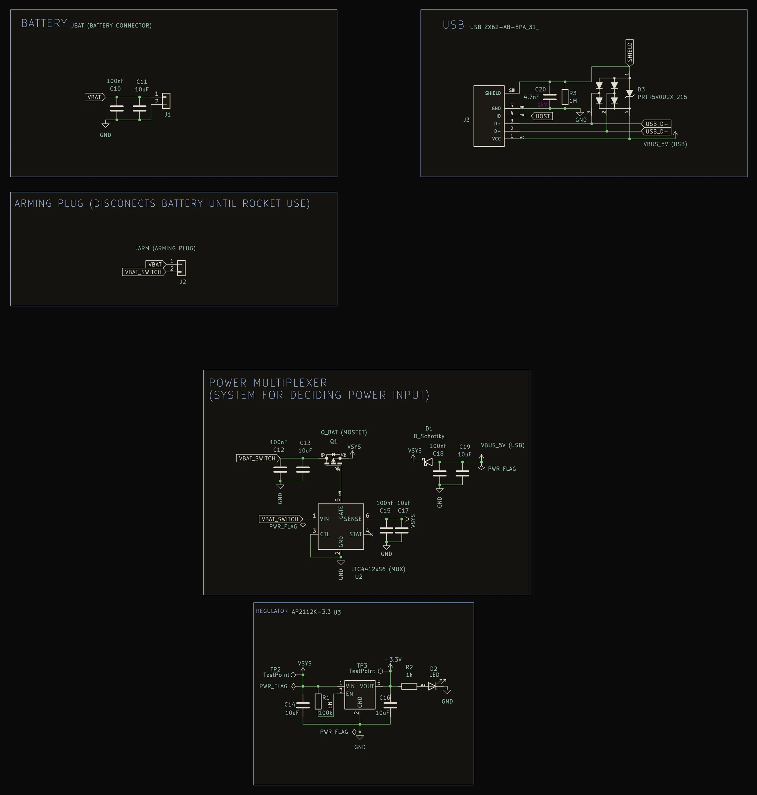
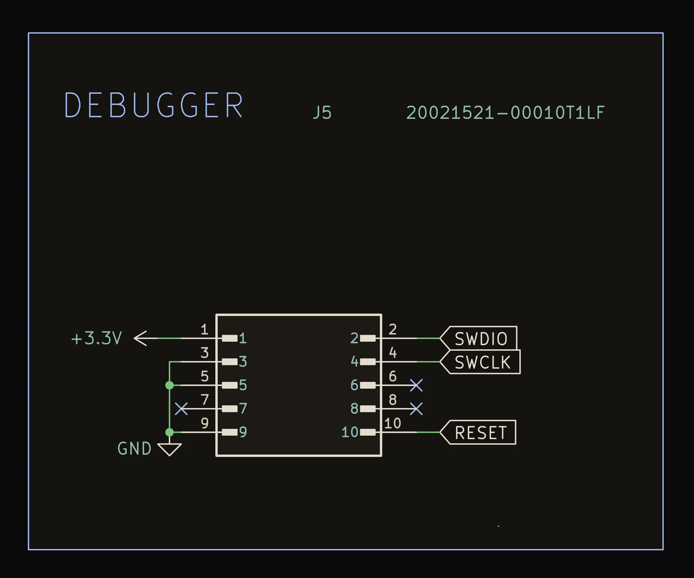
Layout and size
The board is 37.9 mm by 52.1 mm, about 1,966 mm², similar in size to a Reese's cup.
It has four copper layers, which leaves room for a solid ground plane under the GPS and the antenna trace.
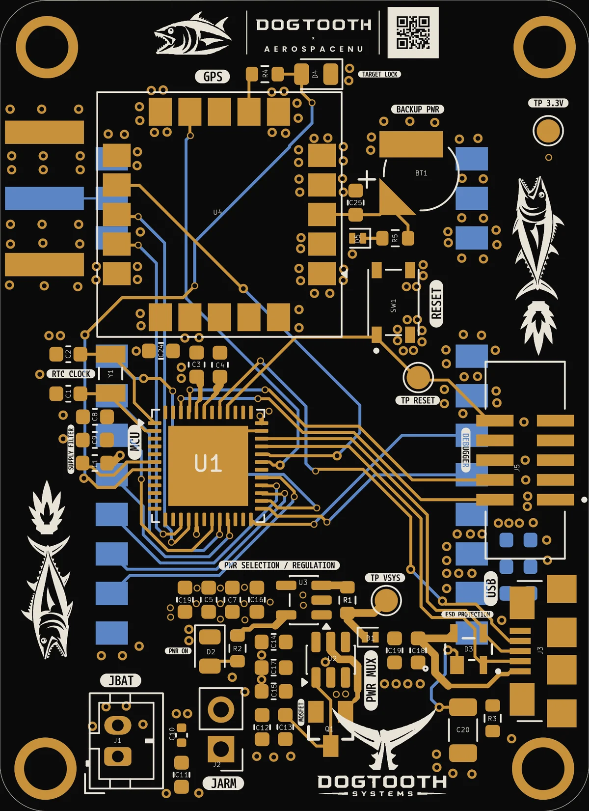
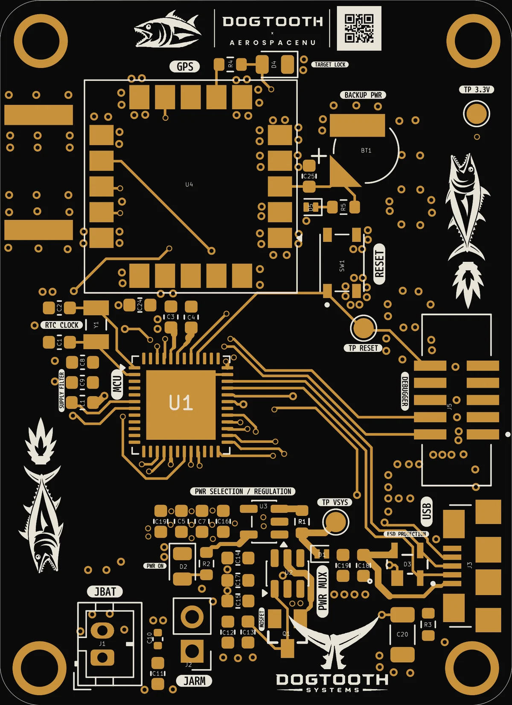
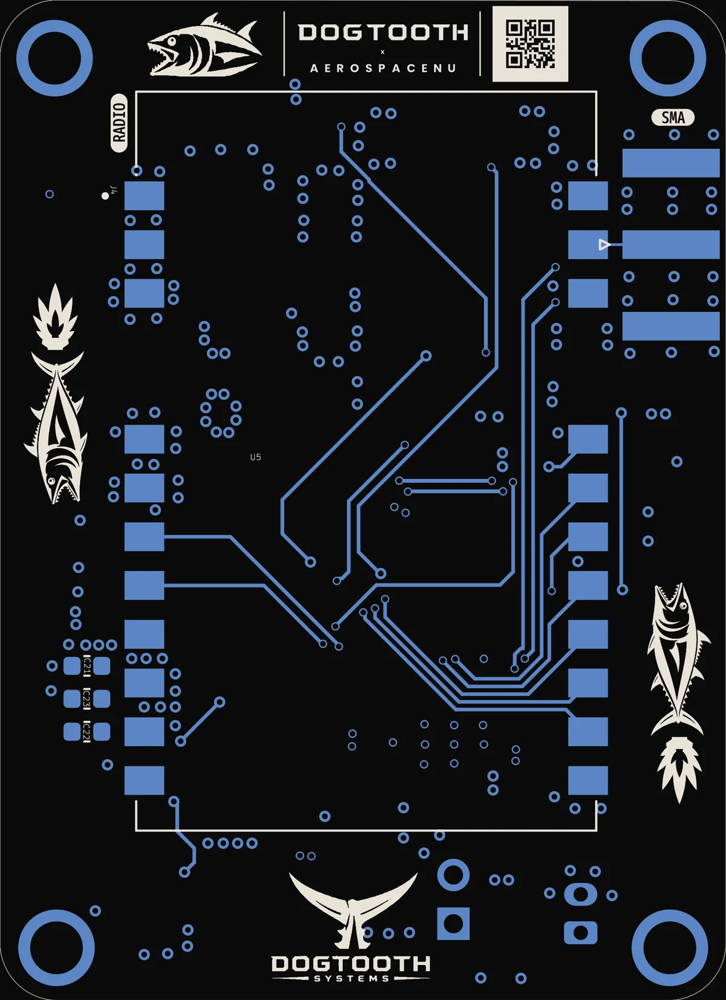
Assembly and bring-up
I hand placed every part and used a mix of reflow and hand soldering.
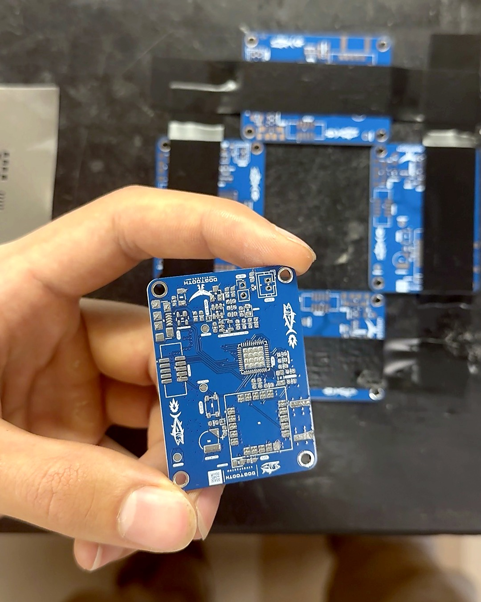
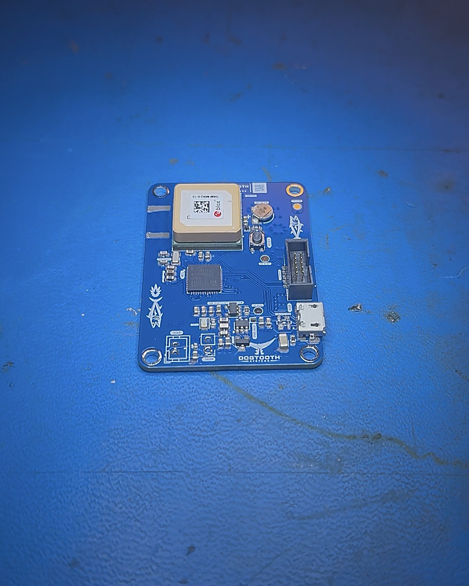
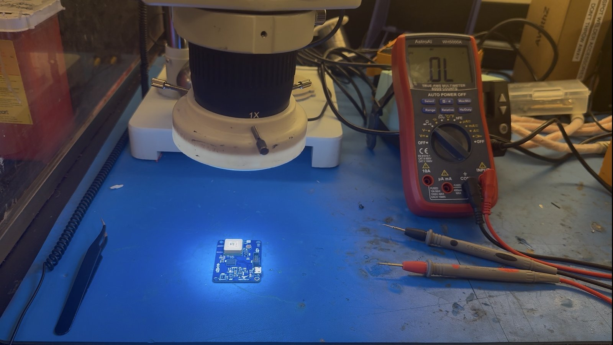